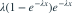
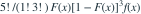

5个独立 Exp(λ) 变量中，第2小值的密度在 x>0 时为？
- A
- B
- C
- D

我已思考，展开答案与解析
正确答案：A
- 次序统计量密度为

。代入指数分布得到所示表达式。
易错提醒先明确分布参数、独立性和统计量的定义，再进行计算。
南审 813 · 2020 · 第1—2页 二·3；从大题提取考点并重写为单选
单选改编；题干与选项已重新编排
查看参考来源


。代入指数分布得到所示表达式。南审 813 · 2020 · 第1—2页 二·3；从大题提取考点并重写为单选
单选改编；题干与选项已重新编排
查看参考来源